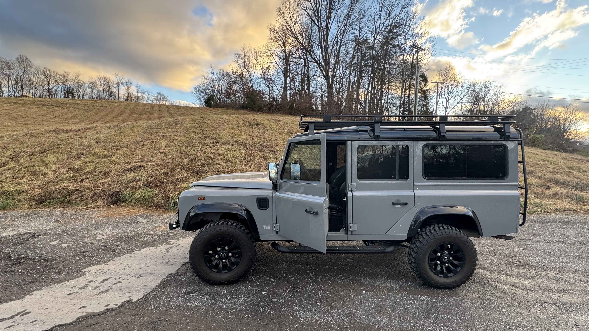
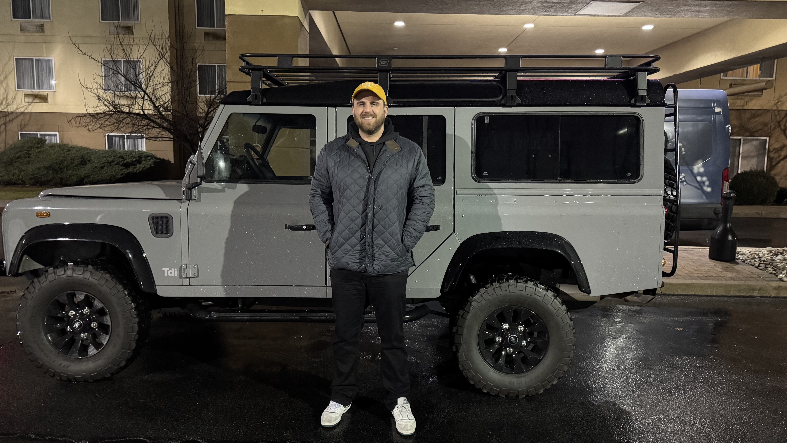
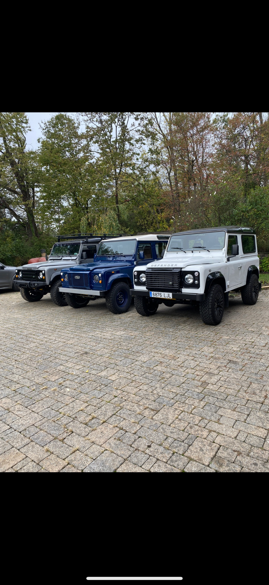
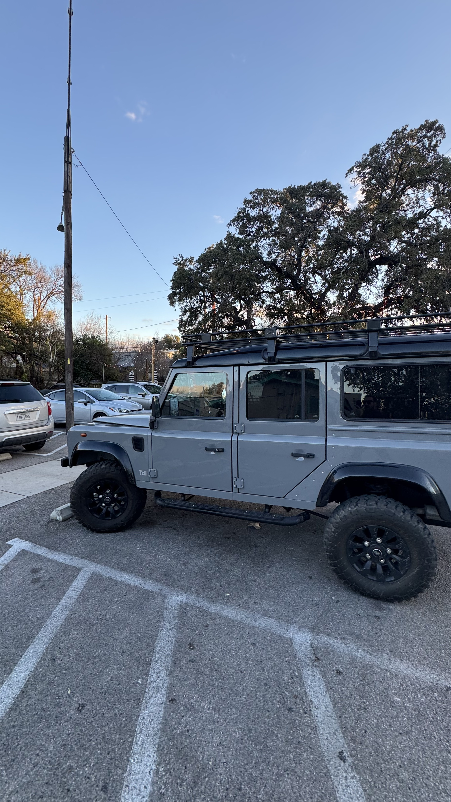

DEFENDER_110_TDI_200.HTML
1993 Land Rover Defender 110 TDi 200
═══════ * ═══════

VEHICLE_OVERVIEW.TXT
A remarkable 1993 Land Rover Defender 110 TDi 200 with a rich cross-continental history. Originally commissioned in Barcelona, Spain, this classic Defender has traversed European mountains and American highways, ultimately finding its home in the heart of Texas.
GALLERY.HTML



VEHICLE_SPECS.DAT
Vehicle Specifications
- Model: Defender 110
- Year: 1993
- Engine: TDi 200 (Rebuilt in Austin, TX)
- Configuration: 5-speed manual
- Body Style: 110
JOURNEY_HISTORY.DAT
Vehicle Journey
- Barcelona, Spain - Original birthplace and registration
- Andorra - Early adventures through the Pyrenees mountains
- Pennsylvania, USA - First US destination after import
- Tennessee, USA - Location of engine failure during transit
- Austin, Texas - Complete engine rebuild and revival
- Texas - Current home and daily driver
CURRENT_STATUS.DAT
Current Status
- Rebuilt TDi 200 engine - Fully operational
- Added AC for the Texas heat
- Still Diesel and Still Manual
HISTORICAL_SIGNIFICANCE.DAT
Historical Significance
This 1993 Defender 110 represents a significant year in Land Rover's history, featuring the robust and reliable TDi 200 engine. Its journey from European mountains to American highways showcases the vehicle's versatility and enduring appeal across continents.